A scintillation detector converts the energy lost by ionizing radiation into pulses of light, then converts the light into an electrical signal that can be counted, timestamped, or histogrammed. This chapter walks through the physics of that conversion, end to end. The reader new to the field should expect to come back to this chapter multiple times as later chapters refer back to it.
In most applications the ionizing radiation arrives as X-rays, gamma rays, alpha particles, or beta particles, with energies from a few keV up to several MeV. The radiation enters the scintillator, deposits energy through one of several interaction mechanisms (Section 2.2), and a fraction of that deposited energy emerges as scintillation photons in the visible or near-ultraviolet range.
The scintillation photons travel through the bulk of the crystal to the photodetector. The photodetector, traditionally a photomultiplier tube (PMT) but increasingly a silicon photomultiplier (SiPM), converts photons to photoelectrons at its photocathode (or microcell) and amplifies them to produce a measurable electrical pulse.
The amplitude of that pulse is proportional to the energy deposited by the original radiation event, because the number of scintillation photons produced is proportional to the deposited energy and the photodetector's response is linear in photon count over its operating range. By measuring pulse amplitude over many events, the detector builds up a pulse-height spectrum, which is the energy spectrum of the incoming radiation convolved with the detector's response function.
Two design decisions follow immediately from this principle.
Crystal volume sets detection efficiency. A larger crystal stops more radiation. For penetrating gamma rays, large means a few centimeters thick of high-density material. For weakly penetrating alpha particles, large means a thin layer with maximum surface area. The well counter, in which the source sits inside a cylindrical hole drilled into the scintillator, achieves nearly 4-pi solid angle and is the geometry of choice for low-activity sample counting.
Crystal thickness can be tuned for selective energy response. A thin crystal (1 mm or less) has good sensitivity to low-energy X-rays and is nearly transparent to higher-energy gamma rays. A thick crystal (several centimeters) is the opposite. This is exploited in dual-mode detectors that use a thin front crystal and a thicker back crystal to separate energy bands.
Three interaction mechanisms dominate gamma-ray and X-ray interactions with the scintillator.
Photoelectric effect. The photon transfers all of its energy to a bound atomic electron, which is ejected from the atom. The cross section for the photoelectric effect scales roughly as Z^4 to Z^5 of the absorber and falls off rapidly with photon energy above about 100 keV. For low-energy gamma and X-rays, in materials with high atomic number, photoelectric absorption is the dominant interaction. This is why high-Z scintillators (BGO, LYSO, LSO, GAGG) are preferred for gamma spectroscopy at energies up to a few hundred keV.
Compton effect. The photon scatters off a quasi-free electron, transferring part of its energy and changing direction. The cross section is approximately proportional to Z and varies more slowly with energy. At energies between roughly 100 keV and a few MeV, Compton scattering is the dominant interaction in most scintillator materials. A Compton interaction in the crystal produces only a partial absorption of the photon energy unless the scattered photon undergoes further interactions before escaping.
Pair production. Above 1.022 MeV (twice the electron rest mass), a photon interacting with the strong electric field near a nucleus can convert into an electron-positron pair. The cross section grows roughly as Z^2 and rises rapidly above the threshold. The positron subsequently annihilates with an electron, producing two 511 keV photons that may or may not be absorbed in the crystal. In the resulting pulse height spectrum, this gives rise to single-escape and double-escape peaks.
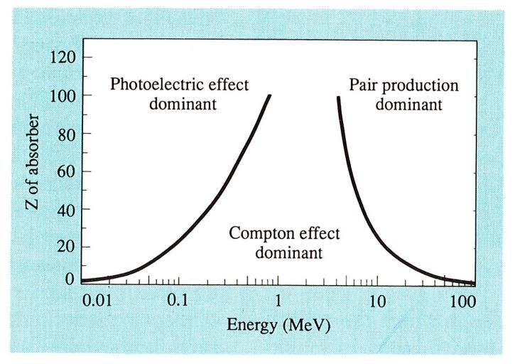
In a real scintillation detector all three mechanisms operate simultaneously, with their relative weights depending on photon energy and the crystal Z. Multiple interactions can chain: a Compton scatter followed by a photoelectric absorption is the most common path to full energy deposition for mid-energy gammas. Bremsstrahlung from energetic electrons, characteristic X-ray emission following photoelectric absorption, and escape of secondary radiation all add structure to the pulse height spectrum.
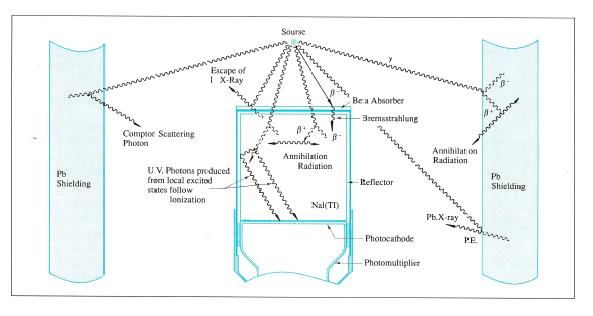
Detection efficiency depends on size, thickness, and density. The total counting efficiency is the probability that an incoming photon undergoes any interaction in the crystal and is therefore counted. The photopeak efficiency, which matters for spectroscopy, is the probability that an incoming photon deposits all of its energy in the crystal and produces a count in the photopeak; this scales approximately as Z^4 to Z^5 of the scintillator material at energies below about 100 keV.
For charged particles the picture is different. Electrons can backscatter off a high-Z material without depositing significant energy, so beta particles are best detected in low-Z scintillators (plastic, CaF2:Eu, YAP:Ce). The backscatter fraction in NaI(Tl) can be as high as 30 percent. Window material and thickness also matter: an aluminized mylar window of 2 to 100 microns is the standard solution for alpha and beta detectors, with the choice driven by the energy of the particles to be detected.
Going Deeper - Photoelectric mass attenuation coefficient
The photoelectric mass attenuation coefficient mu_pe / rho can be written as
mu_pe / rho = K * Z^n / E^m
where K is a material-dependent constant, Z is the effective atomic number of the absorber, E is the photon energy, n is between 4 and 5 depending on energy and absorber, and m is between 3 and 3.5. This relationship is why NaI (Z_eff approximately 50) is more efficient than plastic (Z_eff approximately 6) for gamma detection at the same volume. It is also why lead shielding works: at gamma energies below 100 keV, lead's mass attenuation coefficient exceeds that of nearly any other accessible material.
Because scintillation light is proportional to deposited energy, the standard way to characterize an unknown radiation source is to histogram measured pulse heights. The classical detector chain for this measurement is shown schematically as: scintillation detector, voltage divider (VD), preamplifier, main amplifier (or shaping amplifier), multichannel analyzer (MCA), with a high-voltage supply providing the PMT bias.
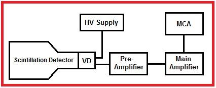
In modern instruments the analog amplifier and analog MCA have largely been replaced by a digital pulse processor that digitizes the preamplifier output directly and performs digital filtering, baseline restoration, pile-up rejection, and pulse-height analysis in firmware. The classical analog chain is still used in education and in legacy installations and still has performance advantages for the highest count rate applications. Both architectures are covered in Chapter 13.
A 14-pin scintillation detector mated to a "digital base" (a digital pulse processor in a PMT-base form factor) is now a common configuration for compact gamma spectrometers operated through a USB or Ethernet link. The architecture has displaced separate-MCA configurations for portable instruments.
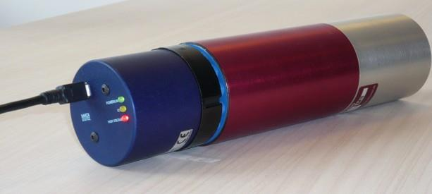
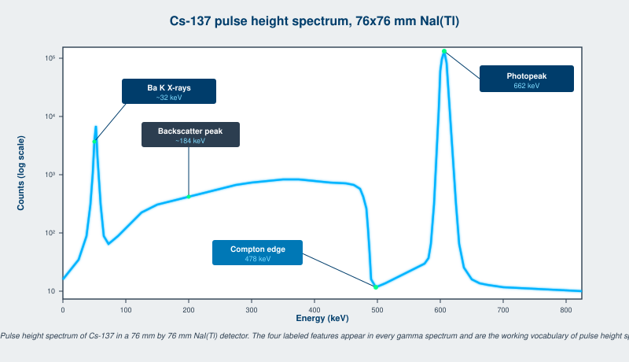
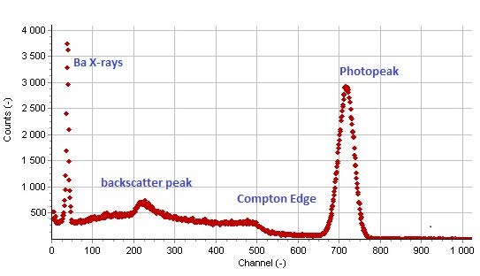
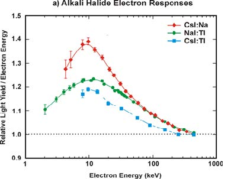
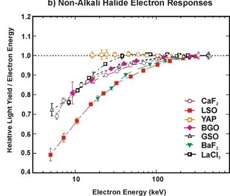
The ability of a gamma spectrometer to distinguish two photons of nearly equal energy is its energy resolution, defined as the full width at half maximum (FWHM) of the photopeak divided by the peak centroid energy, expressed as a percentage. For NaI(Tl) at 662 keV (Cs-137), a typical energy resolution is 7.0 percent FWHM. At 5.9 keV (Mn K-alpha from Fe-55), a typical NaI(Tl) X-ray detector achieves 40 percent FWHM. At low energies the surface treatment of the crystal strongly influences resolution; at high energies the bulk light yield and proportionality dominate.
Three contributions limit scintillation detector energy resolution:
A useful working form of the resolution sum is
R^2 = R_p^2 + R_s^2 + R_i^2
where R_p is the proportionality contribution, R_s is the statistical contribution, and R_i is the inhomogeneity contribution.
Light yield non-proportionality varies dramatically across materials. Tables 2.1 and 2.2 below give relative electron-energy responses for representative scintillators, normalized to the response at 500 keV. The data is from the Mengesha et al. characterization study [1] and has been corroborated by subsequent measurements.
Table 2.1 - Non-alkali halide electron responses (relative to 500 keV)
| Electron energy (keV) | CaF2 | LSO | YAP | BGO | GSO | BaF2 | LaCl3 |
|---|---|---|---|---|---|---|---|
| 1 | 0.75 | 0.48 | 0.72 | 0.78 | 0.72 | 0.82 | 0.72 |
| 2 | 0.82 | 0.58 | 0.78 | 0.85 | 0.80 | 0.88 | 0.80 |
| 5 | 0.92 | 0.75 | 0.88 | 0.95 | 0.90 | 0.95 | 0.92 |
| 10 | 0.98 | 0.85 | 0.95 | 1.00 | 0.98 | 1.00 | 0.98 |
| 20 | 1.02 | 0.92 | 1.00 | 1.02 | 1.02 | 1.02 | 1.02 |
| 50 | 1.02 | 0.98 | 1.02 | 1.02 | 1.02 | 1.02 | 1.02 |
| 100 | 1.02 | 1.00 | 1.02 | 1.02 | 1.02 | 1.02 | 1.02 |
| 200 | 1.02 | 1.02 | 1.02 | 1.02 | 1.02 | 1.02 | 1.02 |
| 500 | 1.00 | 1.00 | 1.00 | 1.00 | 1.00 | 1.00 | 1.00 |
| 1000 | 1.00 | 1.00 | 1.00 | 1.00 | 1.00 | 1.00 | 1.00 |
Table 2.2 - Alkali halide electron responses (relative to 500 keV)
| Electron energy (keV) | CsI:Na | NaI:Tl | CsI:Tl |
|---|---|---|---|
| 1 | 1.10 | 1.10 | 1.10 |
| 2 | 1.15 | 1.12 | 1.15 |
| 5 | 1.30 | 1.18 | 1.22 |
| 10 | 1.40 | 1.25 | 1.25 |
| 20 | 1.32 | 1.22 | 1.20 |
| 50 | 1.18 | 1.15 | 1.12 |
| 100 | 1.10 | 1.08 | 1.05 |
| 200 | 1.05 | 1.02 | 1.02 |
| 500 | 1.00 | 1.00 | 1.00 |
| 1000 | 1.00 | 1.00 | 1.00 |
The qualitative pattern: alkali halides over-respond at low electron energies (the so-called "halide hump"), while non-alkali halides under-respond at low energies (light yield falls below the high-energy value). This non-proportionality, convolved with the distribution of secondary electron energies produced in a gamma interaction, is what limits energy resolution at high gamma energies.
The proportional scintillators (LaBr3:Ce, CeBr3, SrI2:Eu, LBC) achieve energy resolution of 3 to 4 percent FWHM at 662 keV, substantially better than NaI(Tl), precisely because their non-proportionality curves are flatter. Cs2HfCl6, the newest entrant to this class, has been reported at sub-1 percent at 662 keV in research-grade samples [2][3], with commercial samples in the 2 to 3 percent range as crystal growth scales up. Chapter 3 and Appendix A give the full materials picture.
The time resolution of a scintillation detector is its ability to localize an absorption event in time. It is set by the rise time and decay time of the scintillation light pulse, the transit-time spread (TTS) of the photodetector, and the timing jitter of the electronics.
Best time resolution is obtained when the light pulse is short and intense. Small NaI(Tl) detectors achieve a few nanoseconds for Co-60 (1.2 MeV). Organic scintillators (plastic, liquid) and BaF2 achieve much better. BaF2 has a sub-nanosecond fast component and is the fastest known inorganic scintillator, with detector time resolutions of a few hundred picoseconds. CeBr3 and LaBr3:Ce achieve comparable performance with much higher light yield. For time-of-flight positron emission tomography (TOF-PET) the dominant materials are LSO:Ce and LYSO:Ce, which combine high density (essential for stopping 511 keV annihilation photons) with sub-40 ps coincidence timing in the latest detector modules [4].
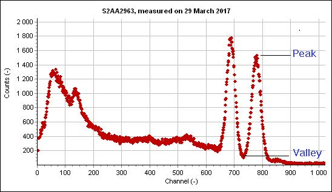
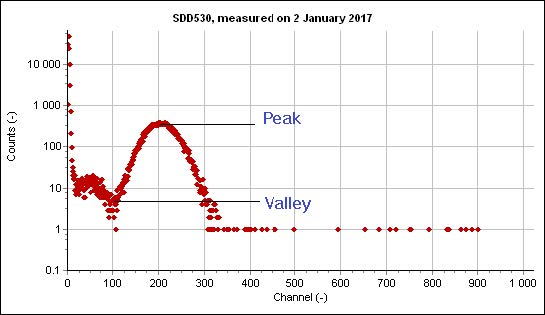
A useful detector quality check that does not depend on absolute calibration is the peak-to-valley (P/V) ratio in a measured spectrum. Either the ratio between two adjacent gamma peaks, or the ratio between a low-energy peak and the noise floor, can be used. A 76 mm by 76 mm NaI(Tl) crystal with 7 percent FWHM at 662 keV typically shows a P/V of 10:1 between the photopeak and the Compton valley. A high-quality NaI(Tl) X-ray detector can show P/V of 40:1 at 5.9 keV.
Both light yield and photodetector gain depend on temperature and operating conditions. A spectrum acquired over hours can drift in centroid position by amounts comparable to the energy resolution if no stabilization is applied. PMTs additionally exhibit hysteresis effects after large count-rate or voltage changes. SiPMs are immune to hysteresis but have a strong gain dependence on temperature that requires bias compensation.
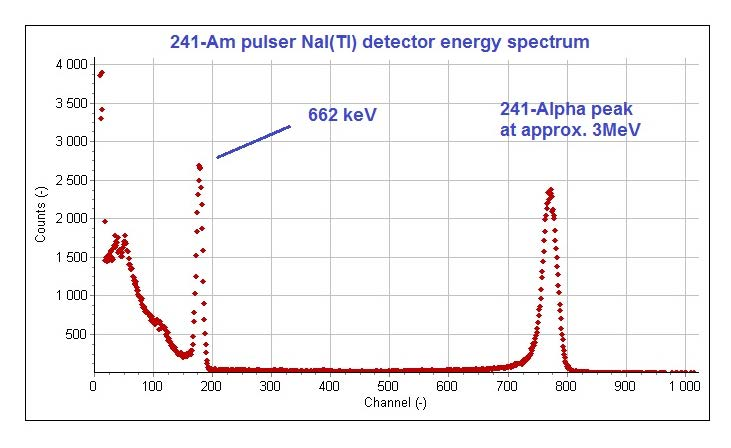
The classical solution is the Am-pulser: a small Am-241 alpha source mounted inside the detector housing. Alpha particles from the source produce scintillations in the crystal at a known average energy (around 3 MeV gamma-equivalent in NaI(Tl)) and a defined count rate (50 to 200 counts per second is typical). The pulser peak position is monitored continuously and used as a reference to correct gain drift in real time. This works well across the operating temperature range of the detector, although second-order corrections (typically a thermistor reading the housing temperature) may be needed at the extremes.
LED-based stabilization is the alternative: a pulsed LED inside the housing injects calibrated light into the photodetector, providing a stable reference independent of the crystal's response. This separates photodetector drift from crystal-temperature effects, which is useful in some applications and a complication in others.
A third option, used in many handheld instruments, is electronic stabilization on a known background line such as K-40 at 1460 keV or Tl-208 at 2614 keV (both ubiquitous in natural background). This requires no internal source and no LED but does require continuous spectral analysis in firmware.
Charged particles, electrons, alphas, beta particles, muons, lose energy by Coulomb interaction with atomic electrons in the surrounding matter. The Bethe-Bloch formula describes the energy loss per unit path length:
-(dE/dx) = K * z^2 * Z/A * (1/beta^2) * [ ln(2 m_e c^2 beta^2 gamma^2 T_max / I^2) - 2 beta^2 - delta(beta) ]
where K is a constant, z is the projectile charge, Z and A are the absorber atomic number and mass number, beta and gamma are the projectile relativistic factors, T_max is the maximum energy transfer in a single collision, I is the mean excitation energy of the absorber, and delta is a density correction.
For practical scintillator design two regimes matter.
Low-energy electrons, protons, alphas, and heavier ions stop within micrometers to millimeters of material. The energy loss per unit path length is high. The conversion of particle energy to scintillation light, however, is reduced compared to gamma rays because of quenching at high ionization density. The alpha-to-gamma response ratio (the alpha quenching factor) ranges from about 0.1 in organic scintillators to about 0.8 in some alkali halides.
For these particles the entrance window matters. Aluminized mylar is the standard, with thicknesses from 2 to 100 microns. A 2-micron double-aluminized mylar window is not 100 percent light-tight and may need shielding from ambient light in low-noise applications.
Going Deeper - Birks formula and ionization quenching
The reduced light yield per unit energy at high ionization density is captured empirically by Birks's formula:
dL/dx = S * (dE/dx) / (1 + kB * (dE/dx))
where dL/dx is the light produced per unit path length, S is the absolute scintillation efficiency at low ionization density, dE/dx is the local energy loss per unit path length, and kB is Birks's constant for the material (units of g/(cm^2 MeV) or similar). For alpha particles dE/dx is large and kB * (dE/dx) >> 1, so dL/dx approaches S / kB, which is independent of dE/dx. This is why alpha-induced light yield in NaI(Tl) saturates with alpha energy and is much lower than gamma-induced yield at the same total energy. Measurements of kB are reported routinely in SCINT and IEEE NSS proceedings; Birks's constant for plastic scintillators is around 0.01 g/(cm^2 MeV); for NaI(Tl) it is around 0.005 g/(cm^2 MeV).
Cosmic muons and high-energy electrons fall in this group. Energy loss per unit path length is low and roughly constant over a wide energy range; a minimum-ionizing particle in a typical plastic scintillator deposits about 2 MeV per cm. Window material and thickness do not matter much because the particle passes through both window and scintillator with negligible energy loss. Applications include calorimetry, electron spectroscopy, cosmic-ray veto in low-background experiments, and muon tomography for nuclear cargo inspection.
For minimum-ionizing particle detection, the figure of merit is light output per centimeter of scintillator crossed times solid angle subtended at the photodetector. This is why long, thin plastic scintillator bars wrapped in reflector and read out at both ends are the standard form factor.
BNC in Practice - Calibrate first, then trust the spectrum
A new scintillation detector arriving on the bench gets a Cs-137 source held to its window before it is asked to do anything else. The 662 keV photopeak appears, the resolution is measured, the gain is set so the photopeak lands on a known channel, and only then does any application work begin. Skipping this five-minute step has cost more than one engineer a long afternoon of debugging. The same step belongs in the daily startup routine of any deployed instrument. A spectrum without a known reference line is a spectrum that cannot be trusted.
The pulse height spectrum, with its photopeak, Compton edge, backscatter peak, and X-ray escape peaks, is the working artifact of the scintillation detector. Every later chapter assumes a reader who can look at one and know what is happening. The materials in Chapter 3 are sorted by what they do to that spectrum: which sharpen the photopeak, which extend the energy range, which add a neutron peak above the gamma background, which trade light yield for speed. Chapters 4 through 7 are the physics that distorts the spectrum: what neutrons add, what damage subtracts, where the emission goes, what temperature does to it. The rest of the book is the engineering of getting the spectrum from the source to the screen with the smallest possible loss along the way.
Take it interactively. The quiz lives on its own page. Pick one answer per question, then check your score. Auto-scored, and your answers are saved on this device. About 10 minutes.
Or read the questions and answers inline below (preserved for print and offline use).
[1] W. Mengesha, T. D. Taulbee, B. D. Rooney, and J. D. Valentine, "Light yield nonproportionality of CsI(Tl), CsI(Na), and YAP," IEEE Trans. Nucl. Sci., vol. 45, no. 3, pp. 456-461, 1998.
[2] M. Yoshikawa et al., "Cs2HfCl6 single crystal growth and scintillation properties," in Proc. SCINT 2024, Milan, 2024.
[3] B. P. Kang et al., "Crystal growth and scintillation properties of Cs2HfCl6," J. Cryst. Growth, vol. 593, p. 126773, 2022.
[4] S. Vandenberghe et al., "Recent developments in time-of-flight PET," EJNMMI Phys., vol. 7, p. 35, 20